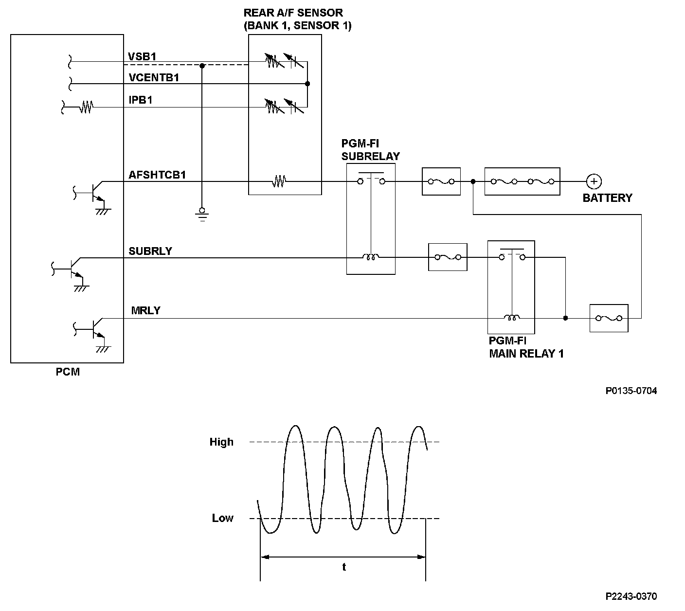
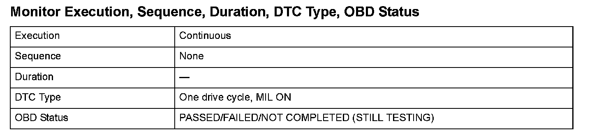
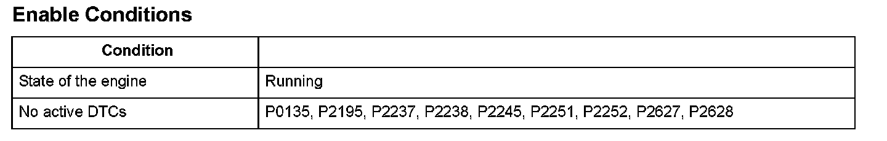

Advanced Diagnostics
DTC P2243: Rear Air/Fuel Ratio (A/F) Sensor (Bank 1, Sensor 1) VCENT Circuit High Voltage
General Description
The rear air/fuel ratio (A/F) sensor (bank 1, sensor 1) is installed in the exhaust manifold and detects oxygen content in the exhaust gas. The rear A/F sensor transmits a signal to the powertrain control module (PCM). The PCM controls fuel injection duration by comparing the target air/fuel ratio with the rear A/F sensor signal. The sensor includes the VS cell, the pump cell, the atmospheric reference cavity, the diffusion layer, and the heater, and it enables overall feedback control.
When the VSB1 terminal voltage repeatedly fluctuates between a value above the specification and a value below the specification at a certain frequency, the PCM detects a malfunction and a DTC is stored.

Monitor Execution, Sequence, Duration, DTC Type, OBD Status

Enable Conditions
Malfunction Threshold
The VSB1 terminal voltage repeatedly fluctuates from a value above 4.8 V to a value below 3.4 V, at least 150 times.
Driving Pattern
Start the engine. Hold the engine speed at 3,000 rpm without load (in Park or neutral) until the radiator fan comes on, then let it idle for 2 minutes.
Diagnosis Details
Conditions for illuminating the MIL
When a malfunction is detected, the MIL comes on and the DTC and the freeze frame data are stored in the PCM memory.
Conditions for clearing the MIL
The MIL will be cleared if the malfunction does not recur during three consecutive trips in which the diagnostic runs.
The MIL, the DTC, and the freeze frame data can be cleared by using the scan tool Clear command or by disconnecting the battery.